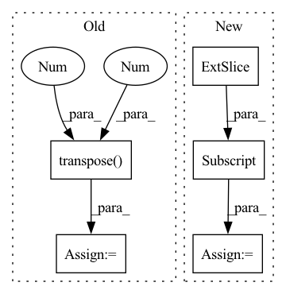

Pattern ID :27340
Before Change
// get generator output and get mpp loss
logits = self.transformer(masked_input, **kwargs)
mpp_loss = F.cross_entropy(
logits.transpose(1 , 2 ) ,
labels,
)
After Change
// get generator output and get mpp loss
cls_logits = self.transformer(masked_input, mpp=True, **kwargs)
logits = cls_logits[:,1:,:]
mpp_loss = self.loss(logits, img, mask)
return mpp_lossIn pattern: SUPERPATTERN
Frequency: 3
Non-data size: 5
Instances Fragment ID: 81254982
Project Name: lucidrains/vit-pytorch
Commit Name: a0a4fa5e7dcca2ce7ad9cd26d7c20544552c00ef
Time: 2021-02-09
Author: zackankner@gmail.com
File Name: vit_pytorch/mpp_pytorch.py
M Class Name: MPP
N Class Name: MPP
M Method Name: forward(2)
N Method Name: forward(2)
M Parent Class: nn.Module
N Parent Class: nn.Module
M File Name: vit_pytorch/mpp_pytorch.py
N File Name: vit_pytorch/mpp_pytorch.py
M Start Line: 80
M End Line: 88
N Start Line: 59
N End Line: 92
Before Change
source, sr = librosa.load(sources_data[_source]["path"], sr)
source = source[start_idx: end_idx].mean(axis=1, keepdims=True)
sources.append(source)
sources = np.concatenate(sources, axis=1).transpose(1 ,0 )
mixture = torch.Tensor(mixture).float()
sources = torch.Tensor(sources).float()
After Change
mixture, sr = librosa.load(mixture_data["path"], sr, mono=True)
mixture = mixture[start_idx: end_idx]
mixture = mixture[np.newaxis,:]
sources = []
for _source in self.sources:
source, sr = librosa.load(sources_data[_source]["path"], sr, mono=True) Fragment ID: 81254822
Project Name: tky823/dnn-based_source_separation
Commit Name: 257c6a90236d368432ccc996cdb8ce51259ae93f
Time: 2020-12-29
Author: 40362510+tky823@users.noreply.github.com
File Name: egs/dsd100/common/src/dataset.py
M Class Name: WaveDataset
N Class Name: WaveDataset
M Method Name: __getitem__(2)
N Method Name: __getitem__(2)
M Parent Class: DSD100Dataset
N Parent Class: DSD100Dataset
M File Name: egs/dsd100/common/src/dataset.py
N File Name: egs/dsd100/common/src/dataset.py
M Start Line: 44
M End Line: 51
N Start Line: 44
N End Line: 52
Before Change
Xlgmel = librosa.power_to_db(Xmel)
X_comp = torch.Tensor(np.abs(Xs)).transpose(1 , 2 )
import pdb; pdb.set_trace()
// test librosa stuff
feats = torch.from_numpy(Xlgmel).to(self.device).permute(0, 2, 1)After Change
psi_out = self.modules.psi(f_I) // generate nmf activations
// cut the length of psi
psi_out = psi_out[:, :, : X_stft_power.shape[1]]
// psi_out = psi_out.permute(0, 2, 1)
reconstructed = self.hparams.nmf(
psi_out Fragment ID: 81254788
Project Name: speechbrain/speechbrain
Commit Name: c0348188064f486d48890e95be305ffd87eb2edb
Time: 2022-11-20
Author: me@francescopaissan.it
File Name: recipes/ESC50/classification/train_interpreter.py
M Class Name: InterpreterESC50Brain
N Class Name: InterpreterESC50Brain
M Method Name: compute_forward(3)
N Method Name: compute_forward(3)
M Parent Class: sb.core.Brain
N Parent Class: sb.core.Brain
M File Name: recipes/ESC50/classification/train_interpreter.py
N File Name: recipes/ESC50/classification/train_interpreter.py
M Start Line: 107
M End Line: 131
N Start Line: 107
N End Line: 138